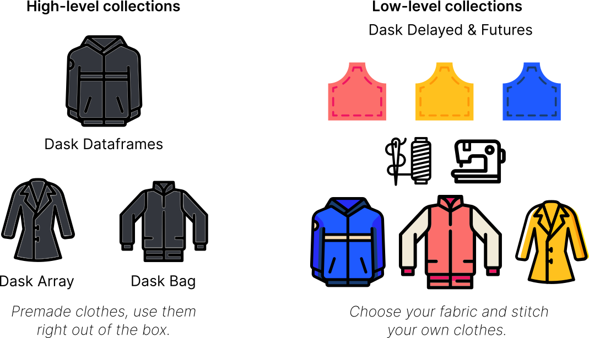
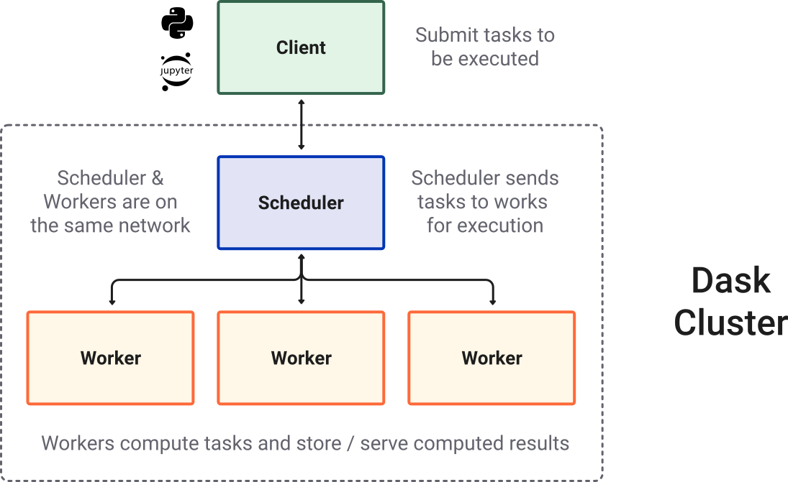

You can run this notebook in a live session  or view it on Github.
or view it on Github.
Welcome to the Dask Tutorial#

Dask is a parallel and distributed computing library that scales the existing Python and PyData ecosystem.
Dask can scale up to your full laptop capacity and out to a cloud cluster.
An example Dask computation#
In the following lines of code, we’re reading the NYC taxi cab data from 2015 and finding the mean tip amount. Don’t worry about the code, this is just for a quick demonstration. We’ll go over all of this in the next notebook. :)
Note for learners: This might be heavy for Binder.
Note for instructors: Don’t forget to open the Dask Dashboard!
[1]:
import dask.dataframe as dd
from dask.distributed import Client
[2]:
client = Client()
client
[2]:
Client
Client-c2b1cf0b-b994-11f0-8dfd-7c1e521a36f9
| Connection method: Cluster object | Cluster type: distributed.LocalCluster |
| Dashboard: http://127.0.0.1:8787/status |
Cluster Info
LocalCluster
0b1e1682
| Dashboard: http://127.0.0.1:8787/status | Workers: 4 |
| Total threads: 4 | Total memory: 15.62 GiB |
| Status: running | Using processes: True |
Scheduler Info
Scheduler
Scheduler-c8f55f9a-1c1b-462b-b56a-9f8e5765e12e
| Comm: tcp://127.0.0.1:42261 | Workers: 4 |
| Dashboard: http://127.0.0.1:8787/status | Total threads: 4 |
| Started: Just now | Total memory: 15.62 GiB |
Workers
Worker: 0
| Comm: tcp://127.0.0.1:42417 | Total threads: 1 |
| Dashboard: http://127.0.0.1:37255/status | Memory: 3.91 GiB |
| Nanny: tcp://127.0.0.1:44409 | |
| Local directory: /tmp/dask-worker-space/worker-w6fzd2nl | |
Worker: 1
| Comm: tcp://127.0.0.1:41105 | Total threads: 1 |
| Dashboard: http://127.0.0.1:34109/status | Memory: 3.91 GiB |
| Nanny: tcp://127.0.0.1:35563 | |
| Local directory: /tmp/dask-worker-space/worker-fjk42d61 | |
Worker: 2
| Comm: tcp://127.0.0.1:42783 | Total threads: 1 |
| Dashboard: http://127.0.0.1:39169/status | Memory: 3.91 GiB |
| Nanny: tcp://127.0.0.1:38223 | |
| Local directory: /tmp/dask-worker-space/worker-oh91irr1 | |
Worker: 3
| Comm: tcp://127.0.0.1:37009 | Total threads: 1 |
| Dashboard: http://127.0.0.1:35059/status | Memory: 3.91 GiB |
| Nanny: tcp://127.0.0.1:43257 | |
| Local directory: /tmp/dask-worker-space/worker-ryo4xztb | |
[3]:
ddf = dd.read_parquet(
"s3://coiled-data/uber/",
columns=["tips"],
storage_options={"anon": True},
)
[4]:
result = ddf["tips"][ddf["tips"] > 0].mean().compute()
result
[4]:
4.89494135653498
What is `Dask <>`__?#
There are many parts to the “Dask” the project:
Collections/API also known as “core-library”.
Distributed – to create clusters
Intergrations and broader ecosystem
Dask Collections#
Dask provides multi-core and distributed+parallel execution on larger-than-memory datasets
We can think of Dask’s APIs (also called collections) at a high and a low level:

High-level collections: Dask provides high-level Array, Bag, and DataFrame collections that mimic NumPy, lists, and pandas but can operate in parallel on datasets that don’t fit into memory.
Low-level collections: Dask also provides low-level Delayed and Futures collections that give you finer control to build custom parallel and distributed computations.
Dask Cluster#
Most of the times when you are using Dask, you will be using a distributed scheduler, which exists in the context of a Dask cluster. The Dask cluster is structured as:

Dask Ecosystem#
In addition to the core Dask library and its distributed scheduler, the Dask ecosystem connects several additional initiatives, including:
Dask-ML (parallel scikit-learn-style API)
Dask-image
Dask-cuDF
Dask-sql
Dask-snowflake
Dask-mongo
Dask-bigquery
Community libraries that have built-in dask integrations like:
Xarray
XGBoost
Prefect
Airflow
Dask deployment libraries
Dask-kubernetes
Dask-YARN
Dask-gateway
Dask-cloudprovider
jobqueue
… When we talk about the Dask project we include all these efforts as part of the community.
Dask Use Cases#
Dask is used in multiple fields such as:
Geospatial
Finance
Astrophysics
Microbiology
Environmental science
Check out the Dask use cases page that provides a number of sample workflows.
Prepare#
git clone http://github.com/dask/dask-tutorial
and then install necessary packages. There are three different ways to achieve this, pick the one that best suits you, and only pick one option. They are, in order of preference:
In the main repo directory
conda env create -f binder/environment.yml
conda activate dask-tutorial
You will need the following core libraries
conda install -c conda-forge ipycytoscape jupyterlab python-graphviz matplotlib zarr xarray pooch pyarrow s3fs scipy dask distributed dask-labextension
Note that these options will alter your existing environment, potentially changing the versions of packages you already have installed.
Tutorial Structure#
Each section is a Jupyter notebook. There’s a mixture of text, code, and exercises.
Overview - dask’s place in the universe.
Dataframe - parallelized operations on many pandas dataframes spread across your cluster.
Array - blocked numpy-like functionality with a collection of numpy arrays spread across your cluster.
Delayed - the single-function way to parallelize general python code.
Deployment/Distributed - Dask’s scheduler for clusters, with details of how to view the UI.
Distributed Futures - non-blocking results that compute asynchronously.
Conclusion
If you haven’t used Jupyterlab, it’s similar to the Jupyter Notebook. If you haven’t used the Notebook, the quick intro is
There are two modes: command and edit
From command mode, press
Enterto edit a cell (like this markdown cell)From edit mode, press
Escto change to command modePress
shift+enterto execute a cell and move to the next cell.
The toolbar has commands for executing, converting, and creating cells.
Exercise: Print Hello, world!#
Each notebook will have exercises for you to solve. You’ll be given a blank or partially completed cell, followed by a hidden cell with a solution. For example.
Print the text “Hello, world!”.
[5]:
# Your code here
The next cell has the solution. Click the ellipses to expand the solution, and always make sure to run the solution cell, in case later sections of the notebook depend on the output from the solution.
[6]:
print("Hello, world!")
Hello, world!
Useful Links#
Reference
Ask for help
`dask<http://stackoverflow.com/questions/tagged/dask>`__ tag on Stack Overflow, for usage questionsgithub issues for bug reports and feature requests
discourse forum for general, non-bug, questions and discussion
Attend a live tutorial